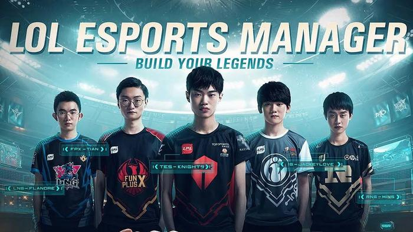

LoL Esports Manager
| LoL Esports Manager | |
|---|---|
|

LoL Esports Manager logo |
|
| Game Title: | LoL Esports Manager |
| Date of Release: | To be announced |
| Genre(s): | Simulation |
| Mode(s): | Single player and Multiplayer |
| Platform(s): | To be announced |
LoL Esports Manager is a simulation game where players can experience coaching their own LoL ESports team. This game has not been released yet to the public.
Synopsis
LoL Esports Manager is a simulation game where players can experience coaching their own LoL ESports team. This game has not been released yet to the public.
Gameplay
Players are allowed to pick any player of LPL (League of Legends Pro League) and form their own Esports team. Basically, this game lets the player to be a coach of their chosen team, so players should be aware of the situation of the game, the status of the team, and more.
Storyline
This game has not been released yet.
Feature Updates
This game has not been released yet.
Cosmetics
This game has not been released yet.
Characters
This game has not been released yet.
Trivia
- LoL Esports Manager's original release was by 2019 after it was announced during League of Legend's tenth anniversary, however, it was delayed due to the pandemic.
Awards
External Links
Media
References
- "LoL Esports Manager: Release date, first look, gameplay details, platforms, more", Ginx Esports TV
- "Riot Gives New Look into Upcoming League of Legends Esports Manager Game", Dot Sports